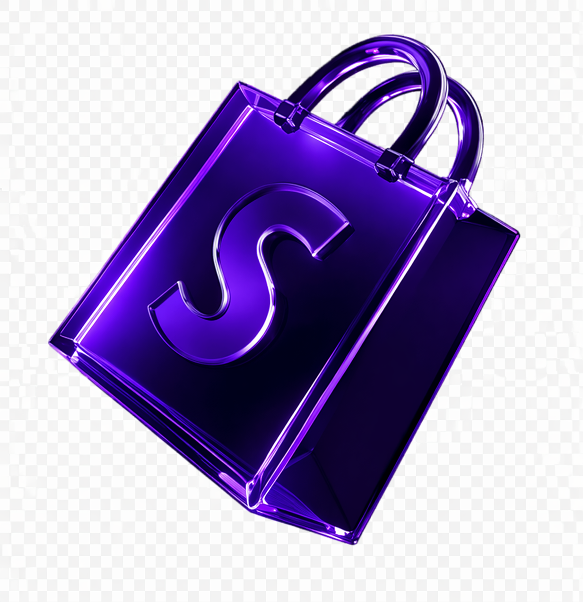
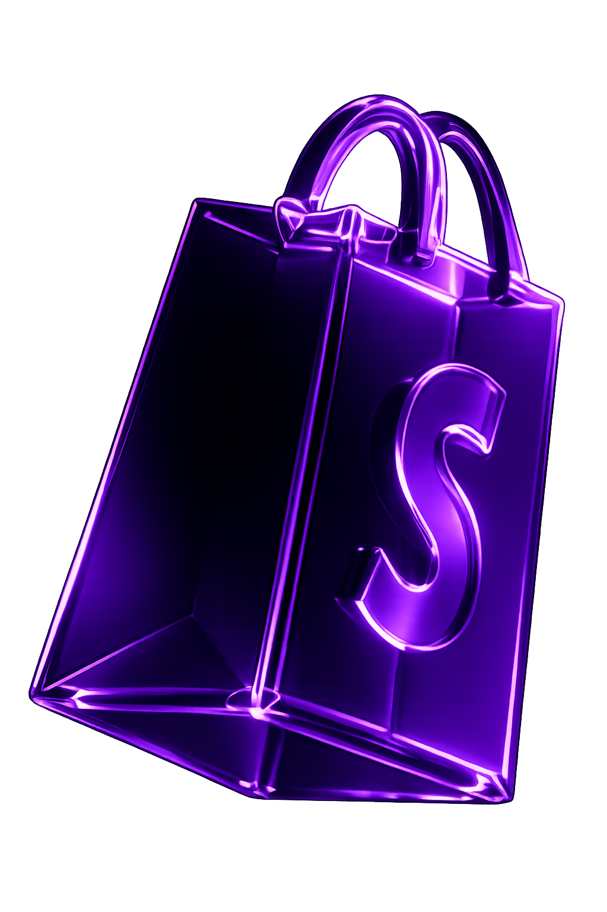
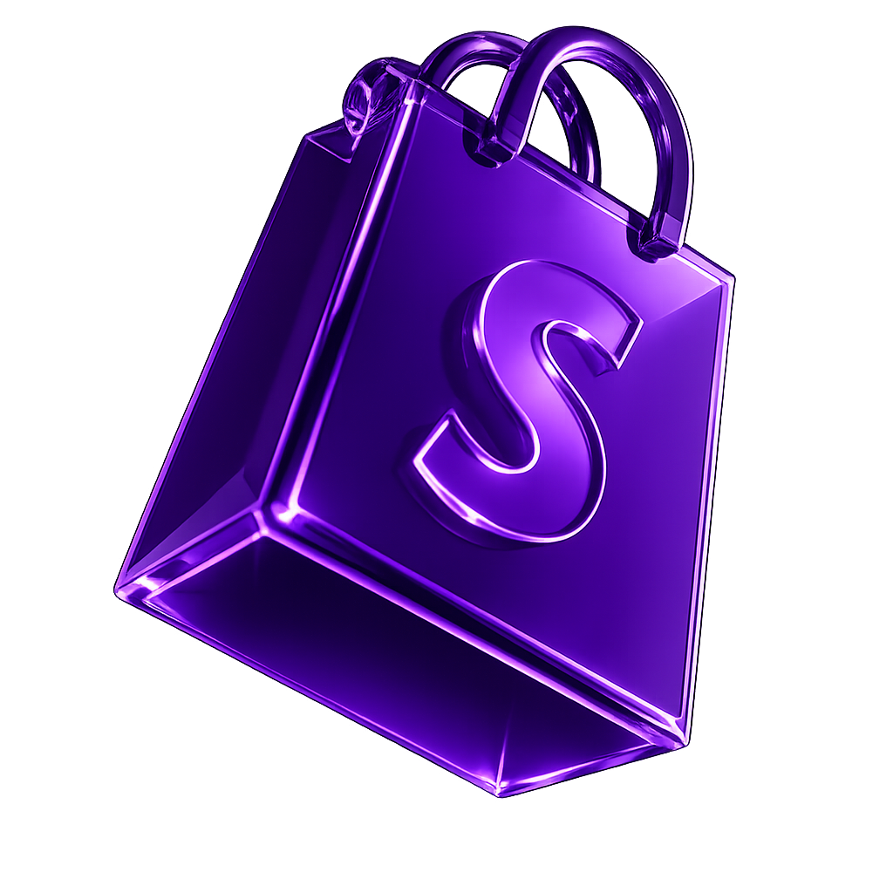

hugo.bnls
Ne lance pas ta marque au hasard.
Récupère ta stratégie ici.
Réserve et découvre notre coaching E-com
Postule pour rejoindre nos programmes
Suis mon quotidien
Rejoins-moi sur Instagram (Off & Uncut)